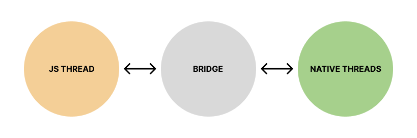

리액트 네이티브의 새로운 아키텍처
2022 is going to be the year of the New Architecture in open source.
올 초, 메타의 소프트웨어 개발자는 리액트 네이티브 (이하 RN) 블로그에 “2022 is going to be the year of the New Architecture in open source.” 라며 새로운 아키텍처를 RN 을 도입하겠다고 발표하였습니다. 어떤 변화들이 RN 에 적용되었고 될 것인지 간략하게 다루어보겠습니다.
JSI
 RN 은 단일 브릿지를 통해 자바스크립트 스레드와 네이티브 스레드가 소통하는데, 비동기식이며 JSON 직렬화 및 일괄 처리가 가능합니다. 이러한 구조로 인해 자바스크립트 스레드와 네이티브 스레드가 직접적으로 소통할 수 없다는 단점, 짧은 시간 내에 많은 상호작용이 이루어질 시 프레임 드랍이 발생하는 문제점 등이 있었습니다. 이와 같은 문제점들을 개선하기 위해 자바스크립트 인터페이스 (JSI) 가 등장하였습니다. JSI 란 C++ 로 작성된 추상화 레이어입니다. JSI 를 통해 네이티브 메소드들은 C++ 호스트 객체를 통해 자바스크립트에 노출됩니다. 이로써 직접적으로 메소드를 실행할 수 있습니다. 또한 JSI 가 C++ 로 작성됨에 따라 RN 은 앞으로 스마트 티비, 스마트 워치와 같은 다양한 프로그램에 이식될 수 있을 것으로 예상됩니다.
Fabric
Fabric 이란 기존 렌더링 시스템을 대체할 RN 의 새로운 렌더링 시스템입니다. 현재 UI 가 아래와 같이 렌더링됩니다.
- 앱이 실행되면, 리액트는 ReactElementTree 를 자바스크립트로 생성.
- 이 트리를 기반으로, 렌더러가 C++ 로 ReactShadowTree 를 생성.
- 섀도우 트리를 통해 UI 위치를 계산.
- 계산이 완료되면, 섀도우 트리는 네이티브 요소들로 이루어진 HostViewTree 로 변환됨.
이 모든 과정은 앞서 말했던 브릿지를 통해 이루어지기 때문에, 레이아웃 점프 이슈와 같은 문제가 발생하였습니다. 하지만 Fabric 은 섀도우 트리를 네이티브에 직접 생성하므로써 위 과정을 대폭 축소하였습니다. 따라서, 유저 인터페이스의 반응성과 렌더링 퍼포먼스가 매우 향상될 것입니다.
Turbo Modules
현재 아키텍처로서는 모든 네이티브 모듈(블루투스, gps, 카메라 등)이 사용 여부와 관계 없이 초기에 불러와져야 합니다. 하지만 새 아키텍처와 함께라면 자바스크립트가 이러한 모듈에 접근할 수 있기 때문에 필요할 때만 모듈을 불러올 수 있으므로 초기 시작 시간을 상당히 개선할 수 있을 것입니다.
Hermes
RN 0.70 부터는 개발자가 선택적으로 적용할 수 있던 Hermes 가 기본 엔진으로 설정됩니다. Hermes 는 자원이 한정적인 디바이스를 위해 설계되었으며 시작 시간, 앱 크기, 메모리 사용을 최적화합니다.
CodeGen
Codegen 은 새로운 아키텍처에 포함된 정적 type checker 입니다. 타입이 지정된 Javascript 코드를 사용하여 앱 빌드 시 네이티브 코드를 동적으로 생성하여 JS 영역과 네이티브 영역 간의 인터페이스를 허용합니다.
여기까지가 제가 알아본 내용입니다. 이러한 변화들이 얼만큼의 성능 개선을 가져올지 기대가 되는 바입니다 :)
좀 더 자세한 내용은 아래 React Native 홈페이지에서 확인할 수 있습니다. https://reactnative.dev/docs/next/the-new-architecture/why